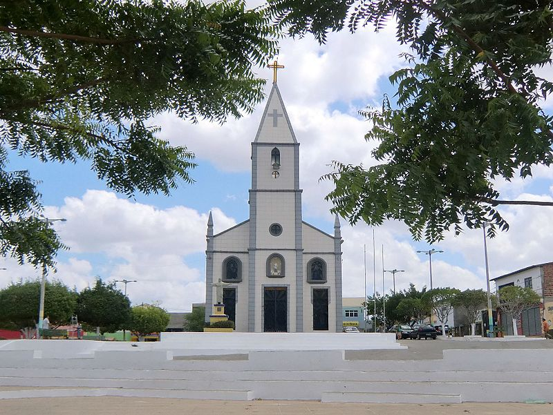
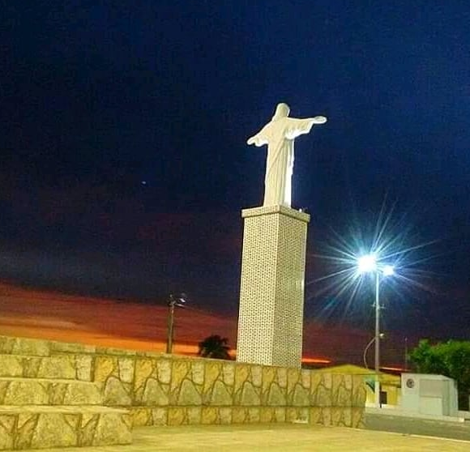
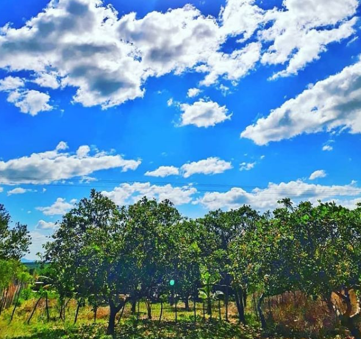
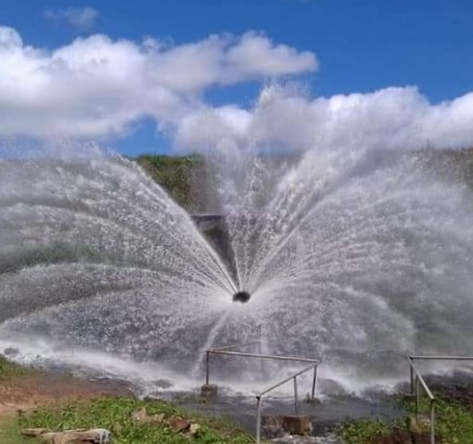

Informações técnicas sobre relevo, população, IDH etc.
| INFORMAÇÕES | |
|---|---|
| Municípios limítrofes | Trairi, São Gonçalo do Amarante, Pentecoste, e Umirim. |
| Fundação | 22 de novembro de 1951 (69 anos) |
| Área total | 122 km² |
| Clima | Tropical |
| IDH | 0,65 — médio |
| PIB | R$ 45 016,400 mil |
| INFORMAÇÕES TERRITORIAIS | |
|---|---|
| Número de habitantes | 13 000 habitantes |
| Superfície de São Luís do Curu |
12 242 hectares
122,42 km² (47,27 sq mi) |
| Densidade populacional | 106,2 ha./km² |
| Altitude de São Luís do Curu | 28 metros de altitude |
| Coordenadas geográficas decimais |
Latitude:
-3.6702
Longitude: -39.2449 |
| Coordenadas geográficas sexagesimais | Latitude: 3° 40' 13'' Sul , Longitude: 39° 14' 42'' Oeste |
| INFORMAÇÕES DO MUNICÍPIO | |
|---|---|
| Endereço da Prefeitura Municipal de São Luís do Curu |
São Luís do Curu
Prefeitura de São Luís do Curu
Rua Rochael Moreira, 98 - Cetro SÃO LUÍS DO CURU - CE, 62665-000 Brasil Work +55 85 3355-1694 Fax +55 85 3355-1215 |
| Telefone da prefeitura |
(85) 3355-1694
Internacional: 55 85 3355-1694 |
| Fax |
(85) 3355-1215
Internacional: +55 85 3355-1215 |
| Endereço eletrônico da prefeitura |
Não disponível
|
| Site oficial do município | saoluisdocuru.ce.gov.br |
| INFORMAÇÕES DO ADMINISTRATIVAS | ||
|---|---|---|
| Prefeito de São Luís do Curu | FRANCISCO CIPRIANO DE ALMEIDA | |
| Partido politico | PC do B | |
| INFORMAÇÕES DE TRANSPORTE | |
|---|---|
| Transporte urbano disponível | - |
| Aeroporto |
Aeroporto Internacional Pinto Martins
Aeroporto de Sobral
121.4 km
Aeroporto Pinto Martins
197.2 km
|
| INFORMAÇÕES DE DISTÂNCIA A OUTRAS CIDADES | ||
|---|---|---|
| São Paulo : 2351 km | Rio de Janeiro : 2183 km | Brasília : 1650 km |
| Salvador : 1038 km | Belo Horizonte : 1869 km | Manaus : 2310 km |
| Curitiba : 2649 km | Fortaleza : 78 km mais perto | Goiânia : 1815 km |
| Belém : 1059 km | Porto Alegre : 3194 km | Guarulhos : 2330 km |
| Campinas : 2301 km | São Luís : 577 km | São Gonçalo : 2.654 km |
| Distância calculada em linha reta! | ||
Conheça mais sobre a história de São Luís do Curu .
As terras que margeiam o rio Curu eram habitadas pelos índios Anacé, Apuiaré e outras etnias de língua Tapuia.
Local que durante muito tempo foi área de fazenda para a criação de gado e plantação de algodão, desenvolveu-se como centro urbano com a construção da Estrada de Ferro de Itapipoca, a partir de 1920. Em 1920 por iniciativa particular foi inaugurada a capela de São Luís de Gonzaga, que depois de um longo processo de construção (1941-1952), foi transformada numa igreja matriz.
Neste local foram construídos dois estabelecimentos: uma casa destinada ao rancho de comboieiros e uma outra que era um posto telefônico. Em 1933, foi inaugurado uma estação de trem para passageiros.
Foi distrito de Uruburetama e Paracuru até 1951, quando este passou a ser município.
Em 2008, a prefeitura de São Luís do Curu, foi um dos palcos da Operação Antidesmonte do Ministério Público Estadual (MPE) e Tribunal de Contas dos Municípios (TCM), por gasto incorreto do dinheiro público.
Saiba mais sobre os melhores lugares e o que fazer em São Luís do Curu.
O principal evento cultural é a Festa do Padroeiro: São Luís de Gonzaga (25 de junho).



Veja como chegar nos melhores pontos de São Luís do Curu.